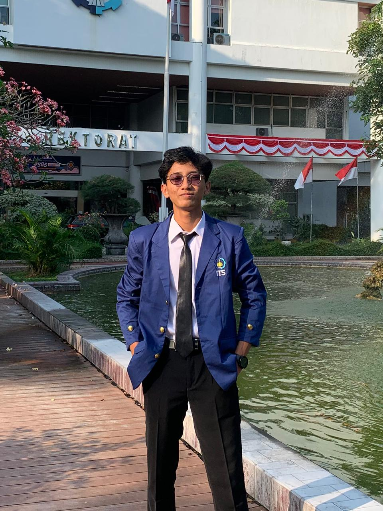
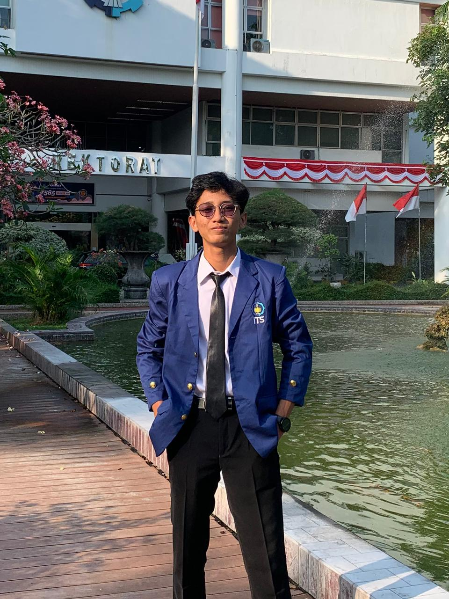

About Me
A story about my life, journey, and passion in technology...
 

Mohammad Najib Bahrudin
Informatics Engineering at its_campus
Hello! You can call me Najib. I am an Informatics student learning the React ecosystem and knowledge in Data Science.
I was born in 2006 in Trenggalek, East Java, Indonesia. Since high school, I have enjoyed working with data. Back then, I was interested in learning how Excel works, although I had to pause for a year while serving as the student council president.
While studying data, I also developed my managerial skills by participating in several organizational committees during high school. That was where my public speaking and problem-solving abilities began to sharpen. Now, I am focusing on honing my hard skills in coding and data, and I hope to achieve this goal smoothly someday. Amen.